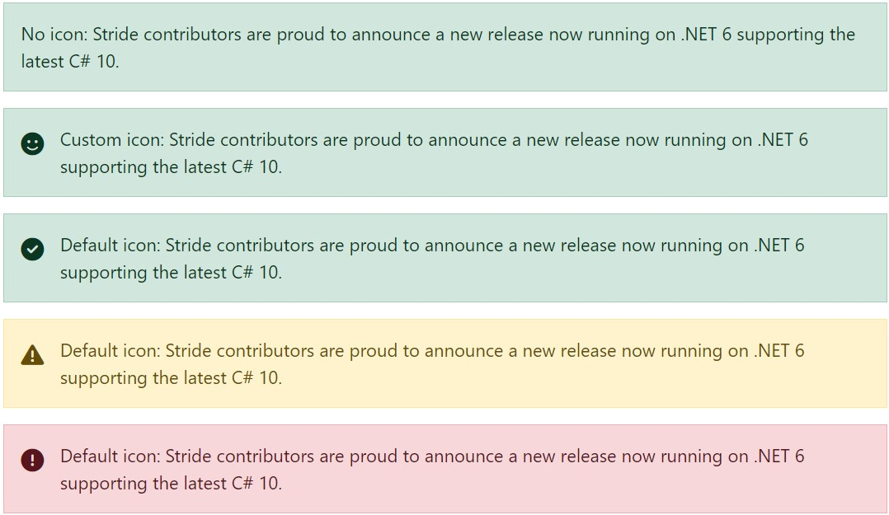
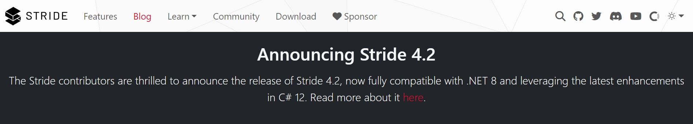

Shortcodes and Includes
You can see examples here https://www.stride3d.net/blog/examples/.
Alert
To add an alert, use the following include, where:
typeis one of the following:primary,secondary,success,danger,warning,info,light,dark. Using these types will automatically include a relevant iconiconis a Font Awesome icon, which is optional. You can use any free icon, e.g., fa-check.titleis the title of the alert
# This will render as a green box without the icon
{% include _alert.html type:'success' icon:'' title:'No icon: Stride contributors are proud to announce a new release now running on .NET 6 supporting the latest C# 10.' %}
# This will render as a green box with a check icon
{% include _alert.html type:'success' title:'No icon: Stride contributors are proud to announce a new release now running on .NET 6 supporting the latest C# 10.' %}
# This will render as a green box with a custom icon
{% include _alert.html type:'success' icon:'fa-face-smile' title:'No icon: Stride contributors are proud to announce a new release now running on .NET 6 supporting the latest C# 10.' %}
Examples
See the examples here.

Alert Banner
A global alert banner can be used for promotional purposes. The banner can be activated in site.json. It will show up on every single page.
"alert-banner": true
The HTML can be updated in the /_includes/alert-banner.html file.

Image
Add responsive images using shortcodes. Be sure to include a descriptive title, as it will improve your post's search engine visibility. Also, if possible, use the webp format for images, which can also be used for transparent images. This will improve the performance of your site.
img
To add a responsive image, use the following shortcode:
{% img 'title' 'url' %}
Replace title with a descriptive title for the image and url with the image URL. This shortcode renders as:
<img alt="title" src="url" class="img-fluid mb-2" loading="lazy" data-src="url">
img-click
To add a responsive image with a clickable link that opens the image in full size, use the following shortcode:
{% img-click 'title' 'url' %}
Replace title with a descriptive title for the image and url with the image URL. This shortcode renders as:
<a href="url" title="title" class="mb-2"><img alt="title" src="url" class="img-fluid" loading="lazy" data-src="url"></a>
To add a responsive image with a clickable link that directs users to a custom destination, use the following shortcode:
{% img-click 'title' 'url' 'destinationUrl' %}
Replace title with a descriptive title for the image, url with the image URL, and destinationUrl with the target URL when the image is clicked. This shortcode renders as:
<a href="destinationUrl" title="title" class="mb-2"><img alt="title" src="url" class="img-fluid" loading="lazy" data-src="url"></a>
Video
We should consider hosting our videos on YouTube whenever possible.
youtube
To embed a YouTube video, use the following shortcode:
{% youtube 'id' %}
Replace id with the YouTube video ID. This shortcode renders as:
<div class="ratio ratio-16x9 mb-2"><iframe src="https://www.youtube.com/embed/id" title="YouTube video" allowfullscreen></iframe></div>
youtube-playlist
To embed a YouTube playlist, use the following shortcode:
{% youtube-playlist 'id' %}
Replace id with the YouTube playlist ID. This shortcode renders as:
<div class="ratio ratio-16x9 mb-2"><iframe src="https://www.youtube.com/embed/videoseries?list=id" title="YouTube video" allowfullscreen></iframe></div>
To embed a video hosted elsewhere, use the following shortcode:
Hosting our own videos
{% video 'url' %}
Replace url with the video URL (e.g., .mp4 file). Make sure you have a matching .jpg file with the same name as the .mp4 file for the poster attribute. This shortcode renders as:
<!-- jpgUrl = url.replace(".mp4", ".jpg") // make sure you have a pair .mp4 and .jpg -->
<div class="ratio ratio-16x9 mb-2"><video autoplay loop class="responsive-video" poster="jpgUrl"><source src="url" type="video/mp4"></video></div>
How to encode videos
Videos can be generated by many software in various formats & size, so they might end up being incompatible with web browsers or mobile, or simply be way too large. It is better to stick to a format with low requirements such as H264 baseline profile (works almost everywhere).
To do so, process the file using fmpeg:
ffmpeg -i myvideo_original.mp4 -profile:v baseline -level 3.0 -an myvideo.mp4
Also, generate a static thumbnail so that people can preview it before downloading the video (very important on mobile):
ToDo: Check if webp can be generated from ffmpeg
ffmpeg -i myvideo.mp4 -vframes 1 -f image2 -y myvideo.jpg
ToDo: Maybe we could provide a simple tool to do that without using command line.